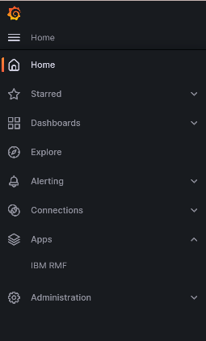

Installing the RMF for z/OS plugin on Grafana
You must install the IBM® RMF for z/OS Grafana plugin to analyze and visualize RMF Monitor III metrics and reports.
Before you begin
You must have completed the following tasks:
- Installed RMF for z/OS 3.1 DDS and the functionality level must be 3650 or higher.
- Installed Grafana 9.5.1 or later.
Procedure
-
To enable the RMF unsigned plugin to be loaded in Grafana you must perform one
of the following options:
- Set the environment variable GF_PLUGINS_ALLOW_LOADING_UNSIGNED_PLUGINS to ibm-rmf,ibm-rmf-datasource,ibm-rmf-report.
- Set the value of allow_loading_unsigned_plugins to ibm-rmf,ibm-rmf-datasource,ibm-rmf-report in the [plugins] section of the defaults.ini file.
- Choose any one of the methods described in the following table to install the RMF for z/OS plugin based on your requirements:
-
Run the following command to install the plugin by using Grafana CLI:
grafana cli --pluginUrl https://github.com/IBM/RMF/releases/download/ibm-rmf-grafana/v<version>/ibm-rmf-grafana-<version>.zip plugins install ibm-rmfRemember: You must replace the value of <version> for the pluginURL option to version number of the plugin to be installed. - Restart the Grafana server, and then go to step 7.
-
Run the following command to create a volume for storing the Grafana
state:
docker volume create rmf-grafana-data -
Run the following command to create and run a container:
docker run --name rmf-grafana --hostname rmf-grafana --detach --restart unless-stopped --volume rmf-grafana-data:/var/lib/grafana --publish 3000:3000 --env "GF_INSTALL_PLUGINS=https://github.com/IBM/RMF/releases/download/ibm-rmf-grafana/v<version>/ibm-rmf-grafana-<version>.zip;ibm-rmf" --env "GF_PLUGINS_ALLOW_LOADING_UNSIGNED_PLUGINS=ibm-rmf,ibm-rmf-datasource,ibm-rmf-report" <image>Remember: You must replace the values of the following options in the command:- <version> for the env option to the version number of the plugin to be installed.
- <image> to the version of the Grafana image to be used.
Note: zCX/zLinux images are available at Container Images for IBM Z and LinuxONE. Similarly, images of other required platforms are available at Docker Hub. -
To enable the RMF for z/OS plugin on the Grafana
UI, you must perform the following sub-steps:
- Optional:
Verify the signature of the IBM RMF Grafana plugin, which is signed with the
GPG key, by performing the following sub-steps:
Results
